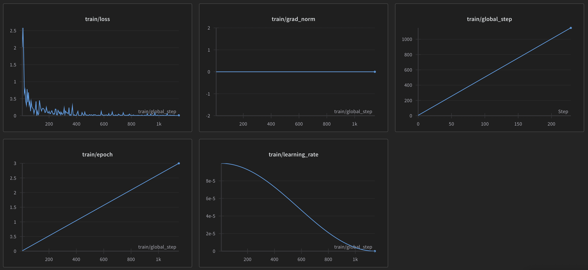
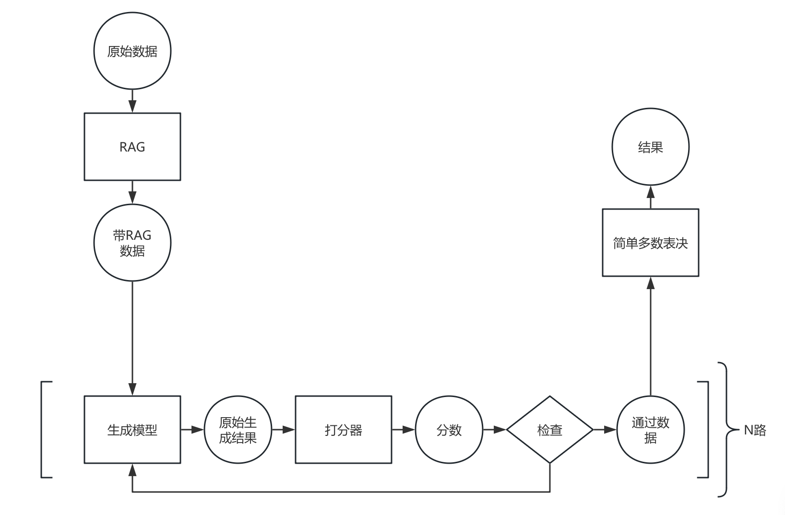

LLM 上层设施 增强生成
前面几部分中，我们逐次利用了微调、RAG、多路投票技术来提升生成模型的性能。除了微调意外，RAG 和多路投票都称为增强生成技术（Augmented Generation）。AG 是指在生成模型的基础上，通过引入额外的信息或者技术，来提升生成模型的性能。在这一部分，我们将介绍并使用几种常见的 AG 技术，包括已经使用的 RAG 和多路投票，以及将要介绍的重采样技术与数据增强技术。
数据增强技术
数据增强技术是指通过对原始数据进行一系列变换，来生成新的数据。数据增强技术可以提升生成模型的性能，因为生成模型在训练时可以看到更多的数据，从而提升泛化能力。常见的数据增强技术包括，使用同义词替换；使用大模型生成数据；使用机器翻译生成数据。
同义词替换顾名思义，就是将原始数据中的某些词替换为其同义词。这种方法可以提升生成模型的泛化能力，因为生成模型在训练时可以看到更多的数据。
使用大模型生成数据是指使用大模型根据已有数据生成新的数据，然后供较小的模型训练（当然，也可以用较小的模型生成，但效果不好）。这种方法可以提升生成模型的性能，因为大模型可以生成更多的数据，从而提升泛化能力。然而，由于幻觉问题，生成的数据可能不符合预期，需要进行清洗，正确性也存疑。
机器翻译生成数据类似于同义词替换，不过是先把数据翻译成另一种语言，然后再翻译回来。这种方法可以提升生成模型的泛化能力，因为生成模型在训练时可以看到更多的数据。这样的数据比起用大模型生成的数据更加可靠。
这里我们使用腾讯翻译的 api。
def translate(text: list[str], trans_back=False) -> list[str]:
from tencentcloud.common import credential
from tencentcloud.tmt.v20180321 import tmt_client, models
import os
cred = credential.Credential(
os.getenv("TENCENT_SECRET_ID"),
os.getenv("TENCENT_SECRET_KEY")
)
from tencentcloud.common.profile.client_profile import ClientProfile
from tencentcloud.common.profile.http_profile import HttpProfile
httpProfile = HttpProfile()
httpProfile.endpoint = "tmt.tencentcloudapi.com"
clientProfile = ClientProfile()
clientProfile.httpProfile = httpProfile
client = tmt_client.TmtClient(cred, "ap-beijing", clientProfile)
request = models.TextTranslateBatchRequest()
params = {
"Source": "zh" if not trans_back else "ja",
"Target": "ja" if not trans_back else "zh",
"ProjectId": 0,
"SourceTextList": text
}
import json
request.from_json_string(json.dumps(params))
response = client.TextTranslateBatch(request)
return json.loads(response.to_json_string())["TargetTextList"]
def translate_entries_inplace(entries: list[Entry], trans_back=False):
problems = [entry.problem for entry in entries]
translated_problems = translate(problems, trans_back)
for entry, translated_problem in zip(entries, translated_problems):
entry.problem = translated_problem
reasoning_flat = [
question.reasoning
for entry in entries
for question in entry.questions
]
translated_reasoning = translate(reasoning_flat, trans_back)
reasoning_idx = 0
for entry in entries:
for question in entry.questions:
question.reasoning = translated_reasoning[reasoning_idx]
reasoning_idx += 1
options_flat = [
option
for entry in entries
for question in entry.questions
for option in question.options
]
translated_options = translate(options_flat, trans_back)
options_idx = 0
for entry in entries:
for question in entry.questions:
question.options = translated_options[options_idx:options_idx+len(question.options)]
options_idx += len(question.options)
questions_flat = [
question.question
for entry in entries
for question in entry.questions
]
translated_questions = translate(questions_flat, trans_back)
questions_idx = 0
for entry in entries:
for question in entry.questions:
question.question = translated_questions[questions_idx]
questions_idx += 1
batch = 5
for i in tqdm(range(0, len(export_entries_translated), batch)):
from_idx =i
to_idx = min(i + batch, len(export_entries_translated))
translate_entries_inplace(export_entries_translated[from_idx:to_idx])
translate_entries_inplace(export_entries_translated[from_idx:to_idx], True)
这样我们的数据量就翻倍了。不过，我们需要在翻译时去掉翻译类的任务，因为这样的任务翻译后可能会有歧义；在 RAG 时，也不要使用扩展的数据，因为这样子，相似度搜索可能会获得多个相同的问题。
此外，instruct 不用翻译，至翻译问题，选项和推理。
重采样技术
重采样又称拒绝采样，是一种用于生成模型的采样技术。该种技术是指，当生成模型生成的结果不符合预期时，拒绝该结果并重新生成。常用的方法是打分器。多路投票也可以看作是一种重采样技术。
打分器是一种用于评估生成结果的技术。在生成模型生成结果后，打分器会对结果进行评分，如果结果不符合预期，则拒绝该结果并重新生成。打分器的设计是一个重要的问题，一个好的打分器可以提升生成模型的性能。
这里我们使用一个小模型进行全量训练作为打分器。
这次我们使用 Qwen2 0.5B 模型进行全量训练，用于打分器。如果输入的推理是正确的，那么打分器的输出 1，否则输出 0。
数据准备
之前我们已经生成好了正确的推理数据，然后我们需要一些错误的推理数据。
这一过程很简单：把我们生成推理数据的 Prompt 的答案改为错误的答案，然后重新生成推理数据，大模型会因为幻觉而进行错误的推理。
因为本来想要的数据就是错误的，所以我们使用一个小模型即可，这里可以用免费 qwen1.5-0.5b-chat 模型。
之前虽然生成好了正确的推理数据，为了提高数据的质量，我们用百度千帆提供的 Yi-34B-Chat（免费但有每日配额）和 Qianfan-Chinese-Llama-2-13B 重新生成一遍。这些模型参数量更大，因此生成的推理数据质量更高。
def generate_reasoning_inplace(entries: list[Entry]) -> None:
template = """你是一个逻辑推理专家，擅长解决逻辑推理问题。以下是一个逻辑推理的题目，形式为单项选择题。所有的问题都是（close-world assumption）闭世界假设，即未观测事实都为假。每个问题都保证能通过一系列基于形式逻辑的推理（包括同一律，矛盾律，排中律的使用等）得到确定的唯一答案。我会向你提供答案，而你要给出逐步的解析来教会我如何得到答案。我是一个小学生，所以每一步的推理不要太复杂。
{problem}
### 问题
{question}
{options}
### 答案
{answer}
### 分析过程"""
import time
import qianfan
client = qianfan.ChatCompletion(model="Qianfan-Chinese-Llama-2-13B")
progress_q = tqdm(total=sum([len(entry.questions) for entry in entries]))
import re
answer_regex = re.compile(r"答案.*?([A-Z])")
def process_question(entry, question):
if question.reasoning is not None:
matches = answer_regex.findall(question.reasoning)
answer = matches[-1] if len(matches) > 0 else None
if answer == None:
with open("./a.txt", "a") as f:
f.write("1\n")
f.write(question.reasoning)
progress_q.update(1)
return
if answer != question.answer:
print(f"答案不匹配: {answer} != {question.answer}")
else:
progress_q.update(1)
return
max_retries = 3
for attempt in range(max_retries):
try:
reasoning_prompt = template.format(**{
"problem": entry.problem,
"question": question.question,
"options": format_options(question.options),
"answer": question.answer
})
from qianfan import QfResponse
resp = client.do([{
"role": "user",
"content": reasoning_prompt
}])
question.reasoning = resp.body["result"]
# 答案是 [A-Z]
import re
matches = answer_regex.findall(question.reasoning)
answer = matches[-1] if len(matches) > 0 else None
if answer is None:
break
if answer != question.answer:
print(f"答案不匹配: {answer} != {question.answer}")
# Retry
continue
with open("reasoning.txt", "a") as f:
f.write(f"{reasoning_prompt}\n\n{question.reasoning}\n\n")
break # Exit the loop if successful
except Exception as e:
if attempt < max_retries - 1:
time.sleep(1) # Optional: wait a bit before retrying
else:
print(f"Failed to process question.")
print(str(e))
progress_q.update(1)
with ThreadPoolExecutor(max_workers=1) as executor:
futures = []
for entry in tqdm(entries):
for question in entry.questions:
futures.append(executor.submit(process_question, entry, question))
for future in futures:
future.result()
progress_q.close()
此外，还有一点要注意，有时候模型的推理给出的答案与我们输入的答案不一致，而且这样的错误数据较多，这样自我们就强迫模型重新生成，至答案一致为止，如果实在得不到正确推理就把它剔除。我们使用简单的正则表达式来提取答案。
import re
answer_regex = re.compile(r"答案.*?([A-Z])")
export_entries = []
for entry in entries:
export_questions = []
for question in entry.questions:
if question.reasoning is None:
continue
matches = answer_regex.findall(question.reasoning)
answer = matches[-1] if len(matches) > 0 else None
if answer is None:
continue
if answer != question.answer:
print(f"答案不匹配: {answer} != {question.answer}")
continue
export_questions.append(QuestionItem(
question=question.question, options=question.options, reasoning=question.reasoning, answer=answer
))
export_entries.append(Entry(problem=entry.problem, questions=export_questions))
之后导出数据即可。
训练
这一次我们使用全量训练。因为模型很小，所以显存占用可以接受。此外，我们还可以使用 lomo 优化器，可参考这个文档。
#!/usr/bin/env python
# coding: utf-8
# In[1]:
from transformers import Qwen2ForSequenceClassification
from transformers import Qwen2TokenizerFast
import torch
from datasets import Dataset
from dataclasses import dataclass, field
# In[2]:
model_path = "./Qwen2-0.5B"
max_length = 512
output_dir = "./scorer_output"
# In[3]:
def get_model_and_tokenizer() -> tuple[Qwen2ForSequenceClassification, Qwen2TokenizerFast]:
model = Qwen2ForSequenceClassification.from_pretrained(
model_path,
num_labels=2,
)
tokenizer: Qwen2TokenizerFast = Qwen2TokenizerFast.from_pretrained(model_path)
model.config.pad_token_id = tokenizer.eos_token_id
return model, tokenizer
# In[4]:
@dataclass
class QuestionItem:
question: str
options: list[str]
reasoning: str | None = field(default=None)
answer: str | None = field(default=None)
@dataclass
class Entry:
problem: str = field(default="")
questions: list[QuestionItem] = field(default_factory=list)
# In[5]:
def get_train_dataset() -> Dataset:
import pickle
entries = pickle.load(open("./entries.pkl", "rb"))
entries_false = pickle.load(open("./entries_false.pkl", "rb"))
entries_aug = pickle.load(open("./entries_aug.pkl", "rb"))
entries_aug_false = pickle.load(open("./entries_aug_false.pkl", "rb"))
dataset = []
for entry in (entries + entries_aug):
for question in entry.questions:
label = 1
dataset.append({
"reasoning": question.reasoning,
"labels": label
})
for entry in (entries_false + entries_aug_false):
for question in entry.questions:
label = 0
dataset.append({
"reasoning": question.reasoning,
"labels": label
})
return Dataset.from_list(dataset).shuffle(seed=42)
# In[6]:
def encode_dataset(dataset: Dataset, tokenizer: Qwen2TokenizerFast) -> Dataset:
def encode(examples):
encoded = tokenizer(
examples["reasoning"],
pad_to_multiple_of=8,
max_length=max_length,
truncation=True
)
return encoded
return dataset.map(encode, batched=True).remove_columns(["reasoning"])
# In[7]:
import os
os.environ["WANDB_PROJECT"] = "fine-tune-logic-inference-scorer"
# In[8]:
from trl.trainer import SFTTrainer, SFTConfig
from transformers import TrainingArguments
def get_config() -> SFTConfig:
return SFTConfig(
output_dir=output_dir,
num_train_epochs=3,
learning_rate=1e-4,
logging_steps=5,
seed=42,
optim="lomo",
lr_scheduler_type="cosine",
report_to="wandb",
)
# In[9]:
def train():
from accelerate import Accelerator
acc = Accelerator()
model, tokenizer = get_model_and_tokenizer()
train_dataset = get_train_dataset()
train_dataset = encode_dataset(train_dataset, tokenizer)
model, tokenizer, train_dataset = acc.prepare(model, tokenizer, train_dataset)
config = get_config()
from transformers import DataCollatorWithPadding
trainer = SFTTrainer(
model=model,
args=config,
train_dataset=train_dataset,
data_collator=DataCollatorWithPadding(tokenizer),
)
trainer.train()
trainer.save_model("model")
# In[10]:
if __name__ == "__main__":
train()
训练过程中，显示 grad_norm 为 0 是正常的，因为 lomo 优化器会卸载梯度，因此不会计算梯度的范数。只要 loss 能降到 0.6 以下（因为是 2 分类问题，random guess 的交叉熵损失是 ），就说明是正常的。

使用打分器
使用打分器也很简单，只需要加载模型，然后输入推理即可。
def score_reasoning(reasoning: list[str], scorer: Qwen2ForSequenceClassification, tokenizer: Qwen2TokenizerFast) -> list[float]:
encoded = tokenizer(reasoning, padding=True, truncation=True, max_length=max_length, return_tensors="pt").to("cuda")
with torch.no_grad():
logits = scorer(**encoded).logits
return logits.argmax(dim=-1).detach().cpu().numpy().tolist()
推理代码
下面的代码有大量的 monkey patch，但是能跑就好。
流程图如下，

用新的数据重新走完微调、推理流程，即可获得新的结果。
#!/usr/bin/env python
# coding: utf-8
# In[1]:
import warnings
warnings.simplefilter("ignore")
# In[2]:
from transformers import AutoModelForCausalLM, Qwen2TokenizerFast, Qwen2ForSequenceClassification
from dataclasses import dataclass, field
from langchain_core.prompts import ChatPromptTemplate
from tqdm import tqdm
from datasets import Dataset
from langchain_core.documents import Document
from langchain_chroma import Chroma
from langchain_huggingface import HuggingFaceEmbeddings
embedding_path = "./Dmeta-embedding-zh"
def get_dataset() -> Dataset:
train_dataset = Dataset.load_from_disk("./train_dataset")
return train_dataset
def to_doc(row: dict) -> Document:
return Document(
row["question"], metadata=row
)
def get_embedding() -> HuggingFaceEmbeddings:
return HuggingFaceEmbeddings(model_name=embedding_path)
def get_db() -> Chroma:
db = Chroma.from_documents(
[to_doc(row) for row in get_dataset()],
get_embedding()
)
return db
def get_scorer() -> Qwen2ForSequenceClassification:
m = Qwen2ForSequenceClassification.from_pretrained("./scorer", device_map="auto", num_labels=2)
return m
# In[3]:
model_path = "./qwen2-7b-instruct"
adapter_path = "./output"
max_new_tokens = 1024
max_length = max_new_tokens
batch_size = 16
voters = 5
def score_reasoning(reasoning: list[str], scorer: Qwen2ForSequenceClassification, tokenizer: Qwen2TokenizerFast) -> list[float]:
encoded = tokenizer(reasoning, padding=True, truncation=True, max_length=max_length, return_tensors="pt").to("cuda")
with torch.no_grad():
logits = scorer(**encoded).logits
return logits.argmax(dim=-1).detach().cpu().numpy().tolist()
# In[4]:
# In[5]:
import json
class EntryEncoder(json.JSONEncoder):
def default(self, obj):
if isinstance(obj, Entry):
return obj.__dict__
if isinstance(obj, QuestionItem):
return obj.__dict__
if isinstance(obj, str):
return obj
return super().default(obj)
@dataclass
class QuestionItem:
question: str
options: list[str]
answer: str | None = field(default=None)
@dataclass
class Entry:
problem: str = field(default="")
questions: list[QuestionItem] = field(default_factory=list)
id: str = field(default="")
# In[6]:
def parse_file(file_path: str) -> list[Entry]:
with open(file_path, "r") as f:
lines = f.readlines()
entries = []
import json
for line in lines:
entry = json.loads(line)
questions = []
for question in entry["questions"]:
questions.append(QuestionItem(**question))
entries.append(Entry(problem=entry["problem"], questions=questions, id=entry["id"]))
return entries
# In[7]:
def format_options(options):
return '\n'.join(
[
f'{chr(ord("A") + i)}: {option}'
for i, option in enumerate(options)
]
)
# In[8]:
# In[9]:
def dump_entries(entries: list[Entry], file_path: str):
import json
with open(file_path, "w") as f:
for entry in entries:
f.write(json.dumps(entry, cls=EntryEncoder, ensure_ascii=False) + "\n")
def build_prompt_no_header(x: dict) -> str:
problem = x["problem"]
question = x["question"]
reasoning = x["reasoning"]
answer = x["answer"]
options = x["options"]
full_text = f"""### 题目
{problem}
### 问题
{question}
{options}
### 分析过程
{reasoning}
### 答案
答案是：{answer}"""
return full_text
def build_prompt(x: dict, db: Chroma) -> str:
head = r"""你是一个逻辑推理专家，擅长解决逻辑推理问题。以下是一个逻辑推理的题目，形式为单项选择题。所有的问题都是（close-world assumption）闭世界假设，即未观测事实都为假。每个问题都保证能通过一系列基于形式逻辑的推理（包括同一律，矛盾律，排中律的使用等）得到确定的答案。请逐步分析问题，写出思考过程，并在最后一行输出答案，最后一行的格式为"答案是：A"或"答案是：B"或"答案是：C"或"答案是：D"等等。如果你做对了这个题目，你会获得的一亿奖金。"""
tops = db.similarity_search(
x["question"],
k=2,
)
first_top = tops[0]
second_top = tops[1]
full = f"""{head}
这是一个例子：
{build_prompt_no_header(first_top.metadata)}
这是另一个例子：
{build_prompt_no_header(second_top.metadata)}
现在，你需要解决这个问题：
### 题目
{x["problem"]}
### 问题
{x["question"]}
{x["options"]}
### 分析过程"""
return full
def get_prompts_of_entry(entry: Entry, db: Chroma) -> list[str]:
prompts = []
for question in entry.questions:
prompt = build_prompt({
"problem": entry.problem,
"question": question.question,
"options": format_options(question.options)
}, db)
prompts.append(prompt)
return prompts
from vllm import LLM, SamplingParams
from vllm.lora.request import LoRARequest
import torch
def get_model_and_sampling() -> tuple[LLM, SamplingParams, LoRARequest]:
llm = LLM(model_path, model_path, enable_lora=True, quantization="fp8", gpu_memory_utilization=0.7)
sampling = SamplingParams(
max_tokens=max_new_tokens,
n=voters,
)
lora = LoRARequest(
"default",
1,
adapter_path
)
return llm, sampling, lora
def get_answer_from_raw(raw) -> str:
raw = raw
raw = raw.split("---")[0]
raw = raw.split("### 题目")[0]
raw = raw.split("### 问题")[0]
remove_chars = ["*", "-"]
for char in remove_chars:
raw = raw.replace(char, "")
import re
match = re.search(r"答案是：[A-Z]", raw)
if match:
answer = match.group()
answer = answer.split("：")[-1]
else:
answer = None
return answer
def log_file(log_content: str):
with open("./a.txt", "a") as f:
f.write(log_content + "\n")
def generate_answers_batch(prompts: list[str], model: LLM, sampling: SamplingParams, lora: LoRARequest, scorer: Qwen2ForSequenceClassification, tokenizer: Qwen2TokenizerFast) -> list[str]:
answers_unchecked = [[""] * voters for _ in range(len(prompts))]
scores = [0] * len(prompts)
resample_times = 0
max_resample = 5
while not all([s == 1 for s in scores]) and resample_times < max_resample:
resample_times += 1
need_resample = [
i for i in range(len(prompts)) if scores[i] == 0
]
resample_prompts = [prompts[i] for i in need_resample]
resampled_responses = model.generate(
resample_prompts,
sampling,
lora_request=lora
)
resampled_answers = [
[
o.text for o in r.outputs
]
for r in resampled_responses
]
resampled_scores = [
score_reasoning(ans, scorer, tokenizer)
for ans in resampled_answers
]
for i in range(len(resampled_answers)):
for j in range(len(resampled_answers[i])):
answers_unchecked[need_resample[i]][j] = resampled_answers[i][j]
# remove answers that are not valid
for i in range(len(resampled_scores)):
for j in range(len(resampled_scores[i])):
if resampled_scores[i][j] != 1:
answers_unchecked[need_resample[i]][j] = ""
# choose the max score of each set of reasoning
resampled_scores = [max(s) for s in resampled_scores]
scores = [1] * len(prompts)
for i in range(len(need_resample)):
scores[need_resample[i]] = resampled_scores[i]
answers = []
for one_output in answers_unchecked:
answer = [get_answer_from_raw(r) for r in one_output]
log_file(
"=" * 20 + "\n" + \
"Prompt: \n" + prompts[answers_unchecked.index(one_output)] + "\n" + \
"=" * 20 + "\n" + \
("=" * 20 + "\n").join(
[f"Output: \b{o}" for o in one_output]
)
)
filtered_answers = [ans for ans in answer if ans is not None]
if not filtered_answers:
most_common_answer = None
else:
most_common_answer = max(set(filtered_answers), key=filtered_answers.count)
answer = most_common_answer
if answer is None:
print("Failed to get answer, default to A.")
answer = "A"
answers.append(answer)
return answers
def generate_answers_inplace(entries: list[Entry], prompts: list[list[str]], model: LLM, sampling: SamplingParams, lora: LoRARequest, scorer: Qwen2ForSequenceClassification, tokenizer: Qwen2TokenizerFast):
next_entry_index = 0
next_question_index = 0
total = sum([len(entry.questions) for entry in entries])
progress = tqdm(total=(total // batch_size + (1 if total % batch_size != 0 else 0)))
while next_entry_index < len(entries):
batch_entries = []
batch_prompts = []
start_index_of_first_entry_question = next_question_index
start_index_of_first_entry = next_entry_index
while len(batch_prompts) < batch_size and next_entry_index < len(entries):
entry = entries[next_entry_index]
prompt = prompts[next_entry_index][next_question_index]
batch_entries.append(entry)
batch_prompts.append(prompt)
next_question_index += 1
if next_question_index >= len(entry.questions):
next_question_index = 0
next_entry_index += 1
answers = generate_answers_batch(batch_prompts, model, sampling, lora, scorer, tokenizer)
if len(answers) != batch_size:
print("Answers length not equal to prompt entries length.")
print("This should not happen.")
i = 0
next_entry_to_set = start_index_of_first_entry
next_question_to_set = start_index_of_first_entry_question
while i < len(answers):
entry = entries[next_entry_to_set]
entry.questions[next_question_to_set].answer = answers[i]
i += 1
next_question_to_set += 1
if next_question_to_set >= len(entry.questions):
next_question_to_set = 0
next_entry_to_set += 1
progress.update()
progress.close()
# In[10]:
def get_tokenizer() -> Qwen2TokenizerFast:
return Qwen2TokenizerFast.from_pretrained(model_path)
def main():
entries = parse_file("./round1_test_data.jsonl")
print("building db...")
db = get_db()
print("db built")
print("building prompts...")
prompts = [get_prompts_of_entry(entry, db) for entry in entries]
# unload the embedding
del db
print(prompts[0])
generator, sampling, lora = get_model_and_sampling()
scorer = get_scorer()
tokenizer = get_tokenizer()
generate_answers_inplace(entries, prompts, generator, sampling, lora, scorer, tokenizer)
dump_entries(entries, "./upload.jsonl")
# In[11]:
if __name__ == "__main__":
main()
总结
在这一部分中，我们介绋了数据增强技术和重采样技术，并使用了这两种技术来提升生成模型的性能。数据增强技术可以提升生成模型的泛化能力，重采样技术可以提升生成模型的性能。在实际应用中，我们可以根据具体的任务和数据集来选择合适的增强技术。
不过最后这个打分器的效果不是很好，应该多给一些数据，或者使用更大的模型。不过，这种机制在某些场景下是有用的。
对于逻辑推理问题，最好还可以引用逻辑链（chain of thoughts）来生成推理过程，这样可以更好地理解推理过程。不过，由于我们使用的 instruct 模型而非 chat 模型，因此无法生成逻辑链。